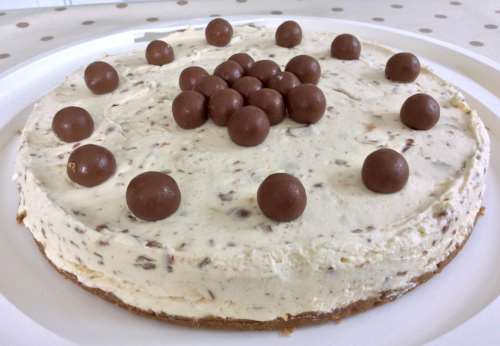

Cheesecake!

This is a decription of a Cheesecake. There are lots of ingredietns needed to make it taste good. Belwo you will find a list of them.
Ingredients
- Milk Chocolate Biscuits
- Butter
- Cream Cheese
- Icing Sugar
- Vanilla Extract
- Double Cream
- Malteasers
Instructions
- Crush the biscuits into tiny pieces
- Melt the butter over a low heat and the combine with biscuits
- Combine the cream Cheese with icing sugar and vanilla extract. Mix well
- Whisk the double cream until soft peaks form
- MIx in the broken malteaser pieces
- Spoon bicuits onto bottomn of tin/jar and top with the mixture
- Let sit for a few hours, then enjoy!